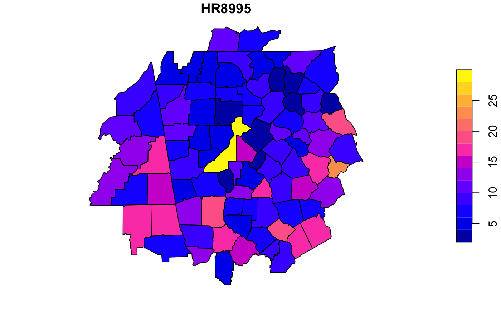

This database contains information of homicides and selected socio-economic characteristics for counties surrounding Atlanta, GA. Data aggregated for three time periods: 1979-84 (steady decline in homicides), 1984-88 (stable period), and 1988-93 (steady increase in homicides).
atlanta_homicide
An sf data frame with 90 rows, 24 variables, and a geometry column:
county name
state name
state FIPS code (character)
county FIPS code (character)
combined state and county FIPS code (character)
state FIPS code
county FIPS code
fips code as numeric variable
homicide rate per 100,000 (1979-83)
homicide rate per 100,000 (1984-87)
homicide rate per 100,000 (1988-95)
homicide count (1979-83)
homicide count (1984-87)
homicide count (1988-95)
population total (1979-83)
population total (1984-87)
population total (1988-95)
police expenditures per capita, 1977
police expenditures per capita, 1982
police expenditures per capita, 1987
resource deprivation/affluence composite variable, 1980
resource deprivation/affluence composite variable, 1985
resource deprivation/affluence composite variable, 1990
Messner, L. Anselin, D. Hawkins, G. Deane, S. Tolnay, R. Baller (2000). An Atlas of the Spatial Patterning of County-Level Homicide, 1960-1990. Pittsburgh, PA,https://www.nttac.org/index.cfm?event=projectDetails&id=339.
Sf object, unprojected. EPSG 4326: WGS84.
if (requireNamespace("sf", quietly = TRUE)) { library(sf) data(atlanta_homicide) plot(atlanta_homicide["HR8995"]) }